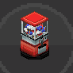
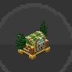

/TESOROS
Tesoros
Los tesoros son los gachapones del servidor: abre uno con su llave y te toca un premio al azar, desde objetos y DTs hasta Pokémon legendarios y skins. Ábrelos en el menú de Tesoros de tu PokePad.

1 llave gratis al día Llaves con DiosesCoins
Llaves con DiosesCoins
Skins del Safari
POKEPAD
Simulación solo por diversión: usa las probabilidades reales, pero no te da nada en el servidor.